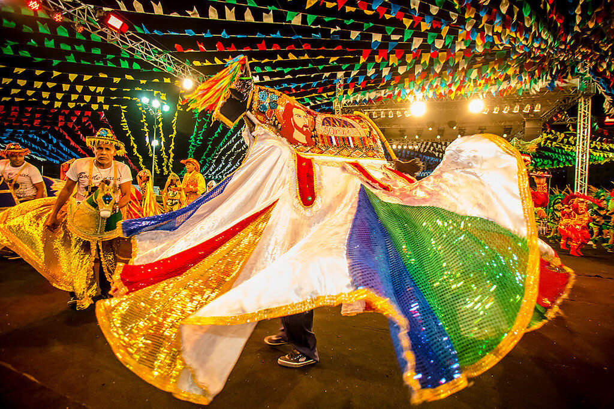
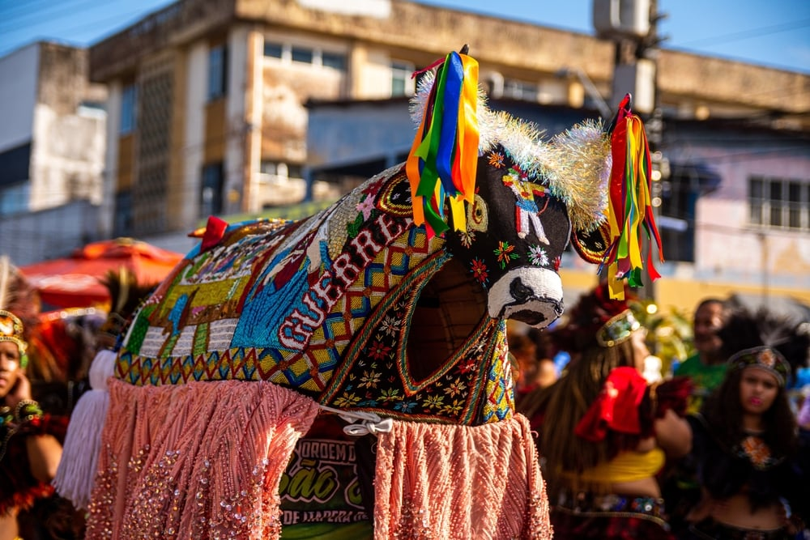
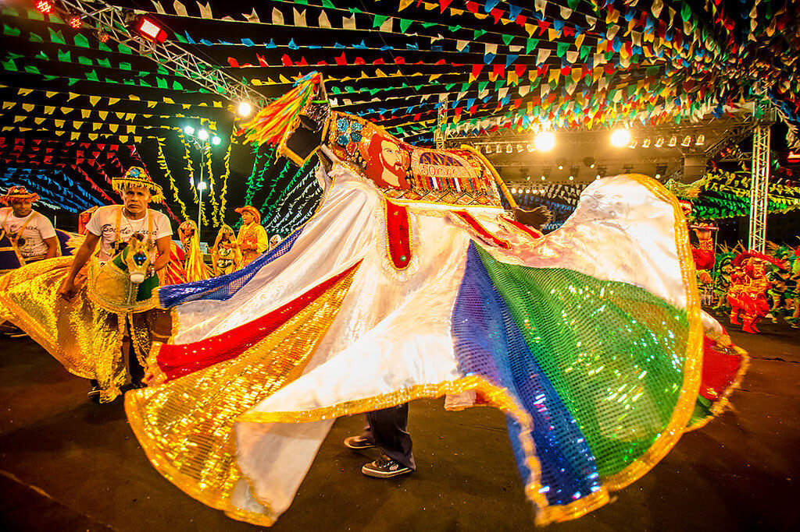
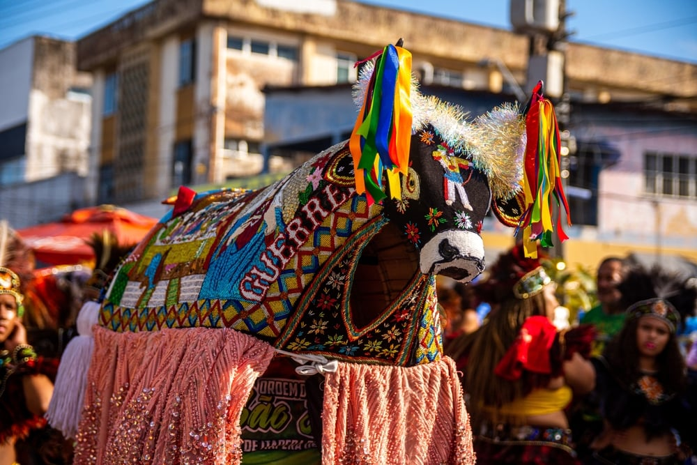
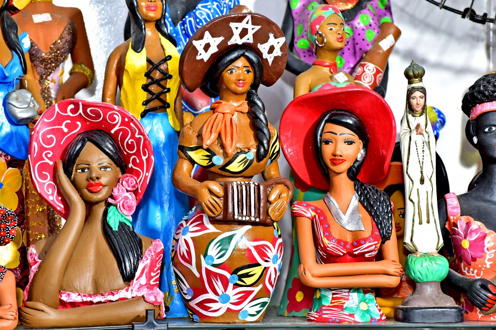
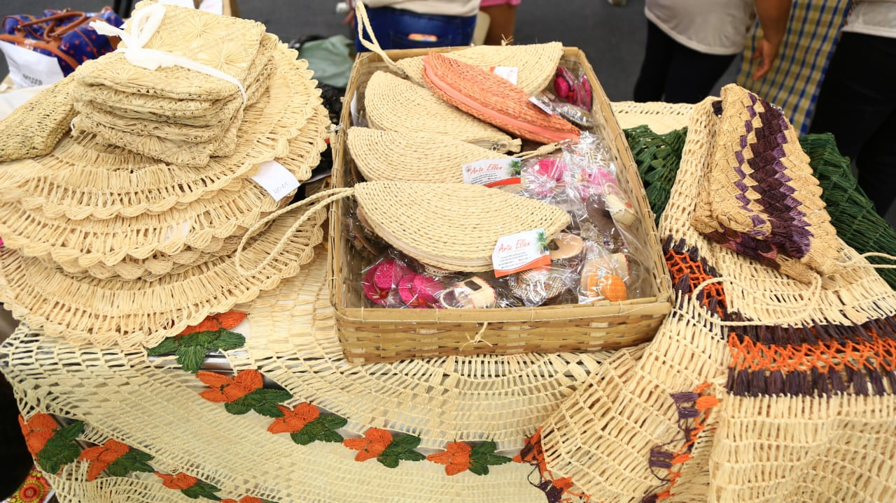
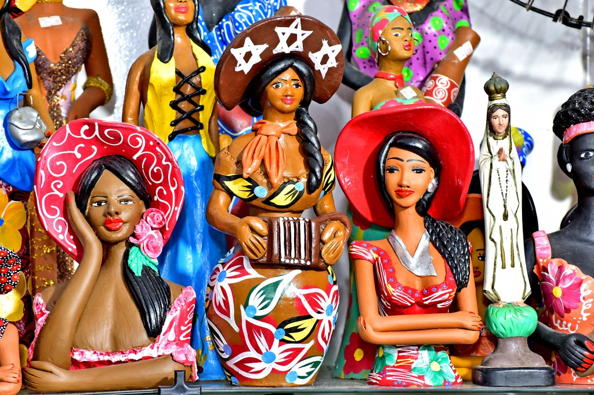
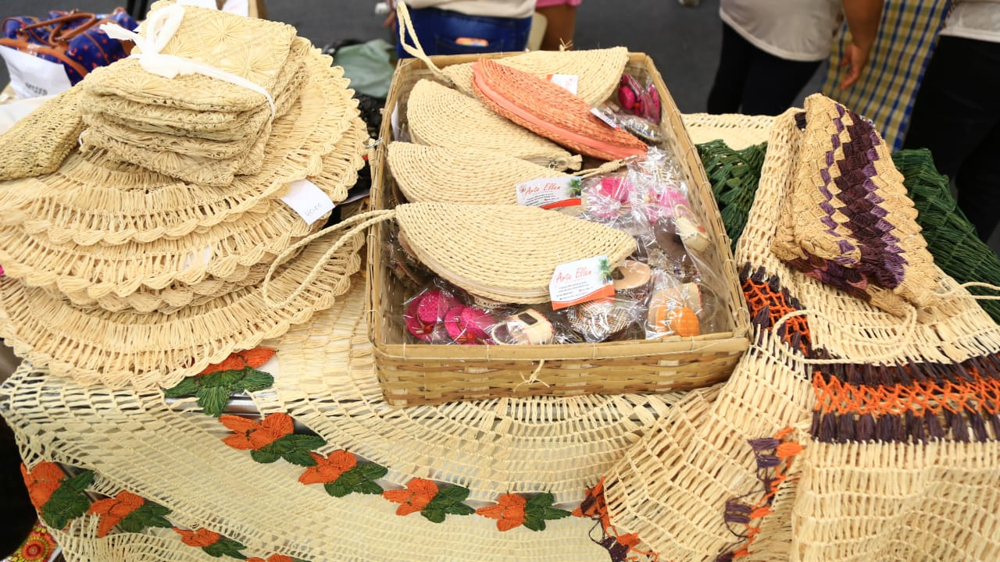

SOBRE O MARANHÃO
O Maranhão é um estado brasileiro. O seu território foi objeto de disputa entre diversos povos europeus, sendo que os portugueses mantiveram o domínio da região. A cultura maranhense é resultado da influência das populações que ocuparam o estado ao longo da sua colonização. A sua capital, São Luís, possui um centro histórico muito conservado. A população maranhense está concentrada no litoral e nas cidades médias do interior do estado.
Maranhão é uma das 27 unidades federativas do Brasil, localizada na Região Nordeste englobando a sub-região Meio-Norte do País. O estado faz divisa com três estados brasileiros: Piauí (leste), Tocantins (sul e sudoeste) e Pará (oeste), além do Oceano Atlântico (norte). Com área de 331 937,450 km² e com 217 municípios, é o segundo maior estado da região Nordeste e o oitavo maior do Brasil.
CULINARIA
Foram tantos os temperos e influências de europeus, índios, africanos e outros povos, que a culinária maranhense só poderia dar no que deu: uma conjunção exuberante, única, inigualável de sabores e receitas na medida para surpreender. Nessa mesa farta existe, é claro, um carro chefe. É o celebrado arroz de cuxá, que vai muito bem com frutos do mar e tem como principal ingrediente uma folha azedinha chamada vinagreira, além de camarão seco e gergelim.
O camarão grelhado preparado em Atins. E os sucos. E as iguarias como os doces de espécie típicos de Alcântara, receita à base de coco de herança portuguesa. E os doces cristalizados, em massa ou calda, à base de frutas regionais, como caju, buriti, bacuri, jaca e abacaxi. Abacaxi que, no Maranhão, especificamente os da região de Turiaçu, município da pré-amazônia maranhense, é muito admirado pelo seu sabor e baixa acidez.
FESTAS
 



Num espetáculo de cores, danças e ritmos, o Bumba-Meu-Boi é a expressão máxima da cultura popular do Maranhão. Elevado a Patrimônio Imaterial do povo brasileiro, a manifestação tem origens indefinidas, mas elementos culturais africanos e europeus, introduzidos principalmente por meio da religiosidade, são evidentes. Nas comunidades que fazem a brincadeira, as celebrações e o trabalho em torno da festa duram praticamente o ano inteiro. Um dos desafios é preparar o couro do boi, revestimento de camurça belamente decorado com canutilhos que recobrem o corpo do animal, pois é de bom tom que este seja renovado a cada temporada. Mas é durante os festejos juninos que ele reina absoluto, arrastando multidões e encantando quem assiste pela primeira vez suas apresentações. No Bumba-Meu-Boi do Maranhão a variedade de sotaques, ou ritmos, faz a diferença.
A Ilha do Amor, como também é conhecida a cidade de São Luís, foi, durante muito tempo, a terceira mais importante economia do país, baseada principalmente no algodão.
Tudo degringolou com o fim da escravatura, pois era o que tornava o comércio tão rentável. São Luís hoje em dia tem a terceira maior população negra no Brasil, ficando atrás só do Rio de Janeiro e de Salvador.
Ainda que tenha sido a capital de um dos Estados mais pobres do Brasil durante quase todo o século XX, a ilha recentemente deu um salto em infraestrutura e ficou bem mais segura.
O motivo? Enfim a dinastia Sarney saiu de lá. Eu estava na ilha no dia em que ocorreu a derrota histórica (parecia que o Brasil tinha ganhado a Copa do Mundo), marcando o fim de uma era. Foram por volta de cinquenta anos de trevas e escuridão no Maranhão.
E essa não é só minha opinião. Quase todo ludovicense lembra onde estava e como celebrou aquele dia.
Aliás, ludovicense é o nome dado ao natural de São Luís. A cidade é tão linda e especial que até o nome tem que ser diferente. Vem de Ludovico (germânico), que seria o antecessor do nome Louis (francês), terminando em Luís (português).
ARTESANATO
 



O artesanato maranhense tem mais de 400 anos de tradição, basta uma visita ao Centro Histórico de São Luís e se pode ver a variedade de artefatos provenientes da produção artesanal do Maranhão, marcados pela criatividade de uma tradição popular que vem sendo aprimorada desde a fundação da capital maranhense.Suas tradições manuais sofrem influências de diferentes povos e suas peças, técnicas, materiais e ferramentas apresentam muitas variações de estado para estado.
As peças do artesanato só se tornam símbolos da cultura maranhense depois que os objetos, geralmente inspirados em ícones da cultura regional, ganham novas formas e cores pelas mãos dos artistas locais.Entre as matérias-primas estão artigos como algodão, couro, madeira, argila e até fibras de plantas.Além de retratar traços da cultura de São Luís, peças valorizam a produção artesanal local e encantam turistas que visitam a capital maranhense.
Basta uma visita ao Centro Histórico de São Luís para conferir a variedade de artefatos que ajudam a contar a história da capital maranhense.
TURISMO
O turismo no Maranhão é rico em patrimônio histórico e em diversidade de ecossistemas. Ao explorar o estado, o viajante encontrará casarões coloniais, museus, danças, praias, mangues, florestas, cachoeiras, lagoas, rios espalhados de norte a sul em uma área de 331 983 km².Como um bom nordestino, o maranhense costuma ser bem receptivo e fará o possível para ajudar quem pedir uma informação. Com seu jeito simples, muitos estabelecimentos, carecem de um pouco mais de tato para lidar com clientes. Quem vier de coração aberto vai se surpreender.
Embora o estado esteja localizado na região nordeste do Brasil, o Turismo no Maranhão não é famoso por suas praias. Os turistas normalmente são atraídos pelo Parque Nacional dos Lençóis Maranhenses e pelo Parque Nacional da Chapada das Mesas, mas ainda há muito o que explorar.
L
mapa interativo aqui